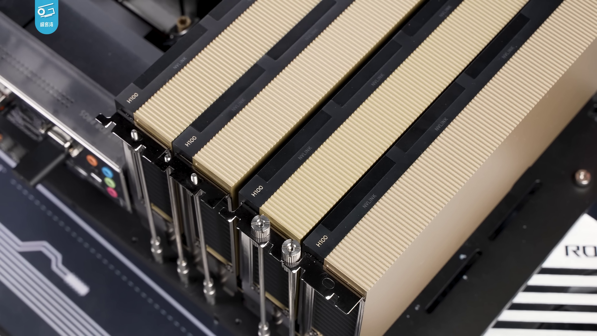

Nvidia H200, 중국에 첫 소량 출하: 허가가 실제 공급으로 바뀌었다
미국이 판매를 허용한 Nvidia H200 AI 가속기가 중국과 홍콩으로 실제 출하되기 시작했다. 아직 물량은 미국 정부 표현으로도 “매우 적은” 수준이다. 하지만 허가만 존재하던 단계에서 칩이 국경을 넘는 단계로 바뀌었다는 점에서 미중 AI 경쟁의 중요한 변곡점이다.
핵심 요약
첫 출하는 시작됐지만, 대규모 공급이 열린 것은 아니다
Jeffrey Kessler 미국 상무부 산업안보 담당 차관은 7월 14일 하원 외교위원회 청문회에서 H200 출하가 시작됐지만 지금까지 중국으로 간 물량은 “very few”라고 말했다. Bloomberg Law는 그가 구체적인 수량과 구매 기업을 밝히지 않았다고 전했다. 중국 기업이 H200을 안정적으로 대량 조달할 수 있게 됐다고 보기는 아직 이르다.

무슨 일이 있었나
| 시점 | 내용 |
|---|---|
| 2026년 초 | 미국 정부가 조건부 판매 방침을 정하고 개별 기업의 구매 허가를 심사하기 시작했다. |
| 5월 | Reuters는 상무부가 약 10개 중국 기업의 H200 구매를 허가했지만 당시 실제 배송은 없었다고 보도했다. |
| 7월 14일 | 미 상무부 고위 당국자가 하원 청문회에서 중국과 홍콩으로 소량의 H200이 출하됐다고 밝혔다. |
| 현재 | 총수량, 최종 구매 기업, 데이터센터 설치 장소는 공개되지 않았다. 허가 신청 현황은 의회에 비공개로 제출됐다. |
H200은 어떤 칩인가
H200은 Nvidia의 Hopper 아키텍처를 기반으로 한 데이터센터용 AI 가속기다. Nvidia 제품 사양에 따르면 141GB HBM3E 메모리와 초당 4.8TB의 메모리 대역폭을 제공한다. 대규모 언어모델의 학습과 추론에서 많은 모델 가중치와 중간 데이터를 빠르게 처리하는 데 유리하다.
다만 H200은 Nvidia의 최신 Blackwell 계열은 아니다. 미국은 더 앞선 제품의 중국 직접 수출을 계속 제한하면서, 이전 세대 고성능 칩은 허가제로 일부 판매하는 방식을 택했다. 이는 중국 기업의 AI 개발을 완전히 차단하지 않으면서도 최첨단 연산 능력의 확산 속도를 통제하려는 절충에 가깝다.
왜 소량 출하가 중요한가
중국 AI 기업은 자체 가속기 개발과 국산 공급망 확대를 추진하고 있지만, Nvidia 생태계가 제공하는 CUDA 소프트웨어와 기존 데이터센터 호환성은 여전히 큰 장점이다. H200을 합법적으로 조달할 수 있으면 연구와 서비스 확장에 선택지가 늘어난다. Nvidia 입장에서도 거대한 중국 시장의 일부를 회복할 수 있다.
동시에 미국 내에서는 승인된 칩이 군사 또는 감시 용도로 전환될 가능성과 최종 사용자를 제대로 추적할 수 있는지를 두고 논쟁이 이어진다. 이번 청문회에서도 수출통제가 외교 협상의 카드가 됐다는 비판과 기존 규제를 현실적으로 집행해야 한다는 정부 입장이 맞섰다.
과장해서 읽으면 안 되는 부분
이번 발표는 중국에 H200이 무제한 풀렸다는 뜻이 아니다. 공개된 표현은 “소량”뿐이고, 출하 규모나 구매 기업은 밝혀지지 않았다. Reuters가 앞서 거론한 Alibaba, Tencent, ByteDance 등도 익명 소식통을 인용한 보도이므로 실제 수령 기업으로 단정할 수 없다. 향후 허가 속도와 최종사용자 조건에 따라 공급 규모가 크게 달라질 수 있다.
한국 독자에게 중요한 이유
고성능 AI 가속기 출하는 HBM, 서버 기판, 네트워크, 전력 장비 수요와 연결된다. 한국 반도체 기업에는 시장 확대 가능성이 있지만, 특정 기업이 곧바로 수혜를 본다고 단정할 단계는 아니다. 더 큰 변수는 미국의 허가 정책이 언제든 바뀔 수 있다는 점이다. 중국 고객을 상대하는 한국 기업도 제품 성능뿐 아니라 최종사용자, 재수출, 서비스 제공 범위를 함께 관리해야 한다.
앞으로 볼 포인트
- 미 상무부가 추가 구매 허가와 실제 출하 규모를 공개하는지
- 중국 기업이 H200을 학습, 추론, 클라우드 서비스 중 어디에 우선 배치하는지
- Blackwell 계열 수출 제한과 H200 허가 조건이 유지되는지
- 중국산 AI 가속기의 개발과 채택 속도에 어떤 영향을 주는지
출처
- Reuters: Nvidia has begun shipping H200 AI chips to China
- Bloomberg Law: Small amount of Nvidia AI chips sold to China via US license
- SCMP: H200 exports to China remain trivial despite approvals
- U.S. House Clerk: FY27 BIS Budget, the AI Arms Race and the ICTS Office hearing
- Nvidia: H200 Tensor Core GPU specifications
- AP: U.S. greenlights Nvidia H200 sales to China with conditions
- Wikimedia Commons: NVIDIA H100 reference image
_027.png){kind=link}